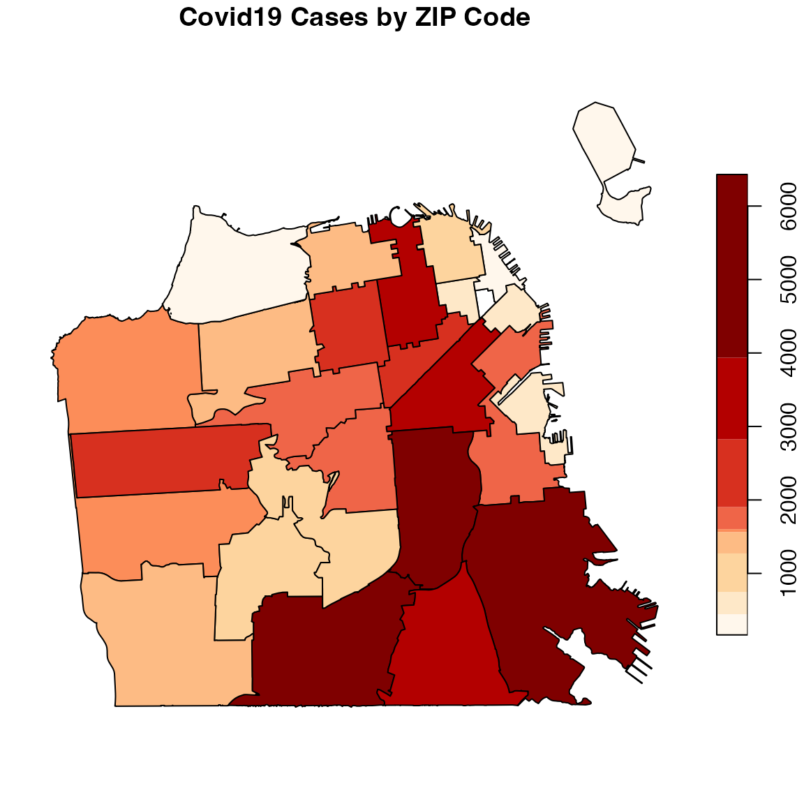

The covid19sf_geo provides information about San Francisco Covid19 cases distribution by geospatial location. Also, testing locations across San Francisco available on covid19sf_test_loc dataset. The following vignette provides examples for geospatial visualization of those datasets. Both datasets are sf objects and contain geometric information (i.e., ready to plot).
The covid19sf_geo dataset
The covid19sf_geo dataset provides a snapshot of the distribution of the Covid19 cases in San Francisco by different geographic locations splits of the city. The datasets contains the following fields:
-
area_type- the geograpichal split method:-
ZCTAfor view the data by ZIP code -
Analysis Neighborhoodfor view the data by neigborhoods -
Census Tractfor view the data by census tract, and -
Citywidefor total cases in the city
-
-
id- the area ID -
count- total number of positive cases in the area -
rate- the cases rate per 10000 residents -
deaths- total number of deaths in the area -
acs_population- total number of residents in the area -
last_updated- last update time of the dataset
While the first three geograpichal split methods contain geomatry components that enable to plot them as a mpa, the last is just aggregated summary of the total cases in the city.
library(covid19sf) library(sf) data(covid19sf_geo) class(covid19sf_geo) #> [1] "sf" "data.frame" head(covid19sf_geo) #> Simple feature collection with 6 features and 7 fields #> geometry type: MULTIPOLYGON #> dimension: XY #> bbox: xmin: -122.4774 ymin: 37.73216 xmax: -122.3741 ymax: 37.80602 #> CRS: 4326 #> area_type id count rate deaths #> 1 ZCTA 94103 591 205.67252 1 #> 2 Analysis Neighborhood Financial District/South Beach 150 77.08912 NA #> 3 ZCTA 94110 1586 213.85904 7 #> 4 Analysis Neighborhood Nob Hill 191 71.86124 NA #> 5 Census Tract 06075980900 NA NA NA #> 6 ZCTA 94117 245 55.38100 6 #> acs_population last_updated geometry #> 1 28735 2020-09-26 18:00:34 MULTIPOLYGON (((-122.3978 3... #> 2 19458 2020-09-26 18:00:34 MULTIPOLYGON (((-122.3875 3... #> 3 74161 2020-09-26 18:00:34 MULTIPOLYGON (((-122.4051 3... #> 4 26579 2020-09-26 18:00:34 MULTIPOLYGON (((-122.4115 3... #> 5 272 2020-09-26 18:00:34 MULTIPOLYGON (((-122.3741 3... #> 6 44239 2020-09-26 18:00:34 MULTIPOLYGON (((-122.4299 3...
Plotting cases with base plot
The sf package provides a plot method for sf objects (see ?sf:::plot.sf for more information). The following example demonsrate a simple use case of the plot function to plot the confirmed cases in San Francisco with the plot function to plot cases distrubtion by ZIP code:
library(dplyr) zip <- covid19sf_geo %>% dplyr::filter(area_type == "ZCTA") %>% dplyr::select(count, geometry) %>% plot(main = "Covid19 Cases by ZIP Code")
You can defines the color palette with the pal argument and set the level of breaks of the color scale by setting the breaks argument to quantile and the number of breaks with the nbreaks argument (which should be aligned with number of colors on the color palette):
library(RColorBrewer) pal <- brewer.pal(9, "OrRd") covid19sf_geo %>% filter(area_type == "ZCTA") %>% select(count, geometry) %>% plot(main = "Covid19 Cases by ZIP Code", breaks = "quantile", nbreaks = 9, pal = pal)
Plotting cases with ggplot
library(ggplot2) covid19sf_geo %>% filter(area_type == "ZCTA") %>% ggplot() + geom_sf(aes(fill=count)) + ggtitle("Covid19 Cases by ZIP Code")
covid19sf_geo %>% filter(area_type == "ZCTA") %>% ggplot() + geom_sf(aes(fill=count)) + scale_fill_viridis_b() + ggtitle("Covid19 Cases by ZIP Code")

covid19sf_geo %>% filter(area_type == "ZCTA") %>% ggplot() + geom_sf(aes(fill=count)) + scale_fill_viridis_b(option = "A", begin = 0.2, end = 0.7) + theme_void() + ggtitle("Covid19 Cases by ZIP Code")
